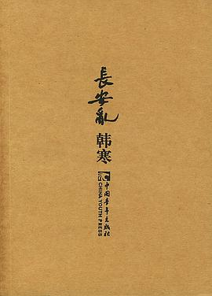

长安乱

7.8
★★★★☆
豆瓣评分 · 86,000 人评价
韩寒最具文学想象力与哲理意趣的长篇武侠寓言。小和尚释空自幼在少林寺长大，十八岁那年少林被灭，他带着青梅竹马的喜宝与一匹瘦马踏入动荡江湖，在啼笑皆非的逃亡中见证权力争斗的荒唐虚无。
总体观点
《长安乱》是韩寒在2004年推出的突破性长篇小说，也是华语当代文学中一部独树一帜的‘反武侠’寓言经典。作品彻底颠覆了金庸、古龙等传统武侠小说中家国大义、神功秘籍与快意恩仇的叙事模式，将一个披着武侠外皮的黑色幽默世界展现在读者面前。
小说通过释空这个无欲无求、说话慢吞吞的小和尚视角，审视所谓‘武林正道’与‘朝廷党争’的本质。书中的武林高手往往死于荒谬意外，名门正派为了抢夺一件虚无缥缈的圣物打得头破血流，百姓却只在乎明天的米价。喜宝纯真无邪的陪伴构成了全书最温暖的底色，但韩寒在结尾毫不留情地让这场流浪走向了生命的永诀与静默。全书文字极度洗练、短句连缀、禅意悠远，以极轻的笔触揭示了极重的人类生存荒诞感。
核心观点
-
1. 反崇高武侠解构：江湖不是大义而是糊涂账
打破大侠为国为民的宏大神话，还原江湖人争权夺利背后滑稽、短视与愚蠢的众生相。
武林盟主大会上，几大门派掌门因为争抢上台演讲的话筒与站位次序拔刀互砍，死伤大半后大会无疾而终。 -
2. 慢半拍的生存哲学：以虚无抵抗狂热
在全天下都在为了野心与欲望疯狂奔跑厮杀时，保持迟钝、发呆与平静反而是保全性命的最高智慧。
释空天生反应迟钝，别人出剑快若闪电，他慢悠悠地眨眼躲过，敌人反而因用力过猛自己失足跌下悬崖摔死。 -
3. 纯真之死：喜宝作为美好记忆的终极消逝
乱世之中最纯洁的美好往往最为脆弱，无论如何呵护，终究难逃时间与命运的无情收割。
喜宝在颠沛流离中因风寒与难产平静死去，释空挖坑埋葬了她，江湖依旧纷乱，但释空的精神世界彻底化为荒漠。 -
4. 权力的荒诞循环：长安城头变幻的大旗
王朝更迭与江湖霸权不过是一场场换汤不换药的戏谑游戏，登台者终将化为枯骨，唯有山川永恒。
攻入长安的新皇帝不过是昔日逃荒的泥腿子，坐在龙椅上第一件事便是颁布与前朝一模一样剥削百姓的苛捐杂税。 -
5. 极简短句的禅宗美学与语言减法
摒弃繁复辞藻与煽情描写，用白描式的冷峻短句勾勒出生死无常与世态苍凉。
‘天黑了。天下雨了。人死了。’极度简练的文字节奏，传递出令人窒息的命运冷酷感与超然的禅机。
全书结构
-
少林清修、下山买肉与山门剧变
描绘释空在少林寺的日常生活，与喜宝的童年情谊，师父的古怪教导以及少林寺猝不及防遭灭顶之灾。
师父让释空去山下买猪肉，释空慢慢走下山，回来发现整座千年古刹已被大火焚尽，师父圆寂在焦黑蒲团上。 -
携喜宝流亡、瘦马老剑与初涉江湖
释空找到在山下等候的喜宝，两人骑着一匹瘸腿老马踏上逃亡之路，见识沿途客栈江湖客的虚张声势。
在悦来客栈遇到自称‘天下第一快剑’的豪客，因吃牛肉面嫌葱花放少与店小二互殴，拔剑时不慎割伤自己大腿。 -
武林盟主纷争、刺杀阴谋与长安兵变
卷入各门派争夺天下霸权的漩涡，各大势力在长安城外集结厮杀，释空因机缘巧合被捧为各方争抢的吉祥物。
各方密使夜入草棚威逼利诱释空签字画押支持立盟，释空只顾低头给喜宝剥烤红薯，完全无视身旁的刀光剑影。 -
避居山野、喜宝之死与天地寂灭
厌倦世间纷乱的释空带喜宝隐居偏僻小山村过寻常日子，喜宝突染重疾在冬夜离世，带走了释空全部的温情。
喜宝闭眼前握着释空的手说‘我要睡一会儿’，大雪落满茅草屋顶，释空在雪地里坐了整整三天三夜。 -
重回少林废墟与孤独的无声归途
老马老死，释空孤身一人重返荒芜的少林寺遗址，在杂草丛生的大雄宝殿废墟前剃度，江湖渐行渐远。
释空坐在残破的佛头旁边眺望远方官道，过往商旅依旧为名为利奔波，风吹落叶，长安依然混乱如常。